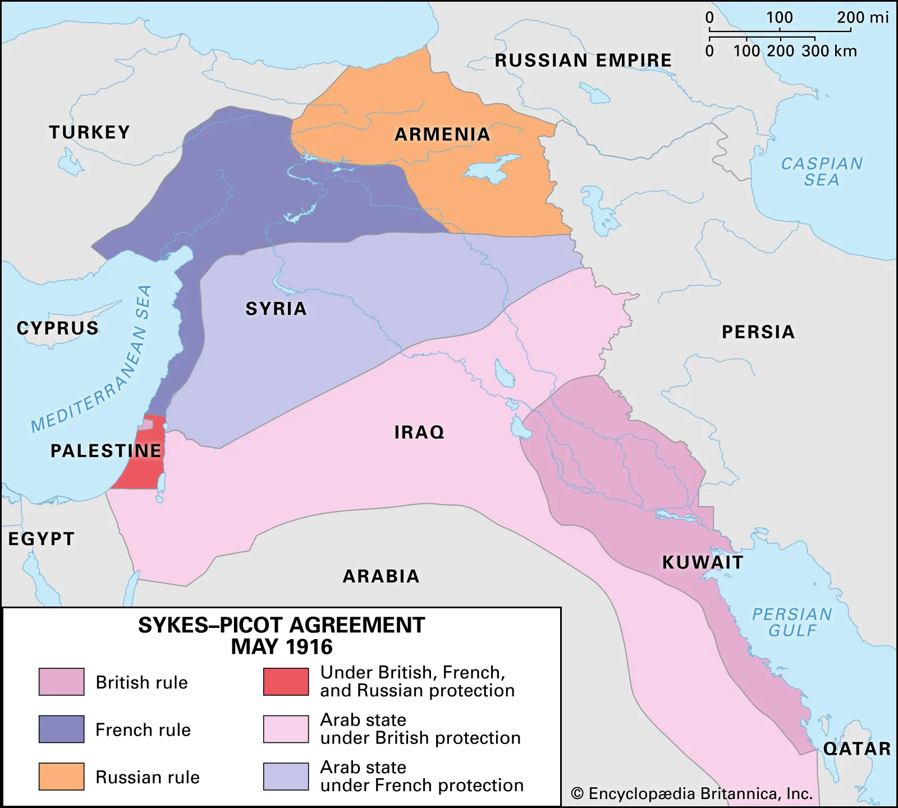

The French Mandate
Sykes-Picot Agreement
- Between 1915-16, the Hussein-McMahon correspondence informally promised an Arab state to in exchange for help against the Ottomans in WWI
- However, in May 1916, the secret Sykes-Picot agreement was made between France, the British, and Russia
- At the time, France had economic intrests in Syria and Britain wanted control of the Suez Canal to access India
- The agreement outlined the disolution of the Ottoman empire where Russia would get Armenian territory, France would get Lebanese/Syrian/Iraqi territory, Britain would get Iraqi/Israeli territory and Palestine would be internationally controlled
- Russia eventually defected from WWI and their side of the deal was cancelled
- After WWI ended Allenby installed Faisal as king of Damascus
- France took over Lebanon and Britain took Palestine, the fate of Syria remained undecided among the Allies
- Once light of the Sykes-Picot agreement reached the Arabs, civil unrest errupted in Syria
- In June 1920, the French made an ultimatum to Syria to recognize the French mandate
- The unrest in Syria continued and France responded with a military occupation and exiled Faisal from the country in July
- 
Conference of San Remo
Sources: [
1
,
2
,
3
]